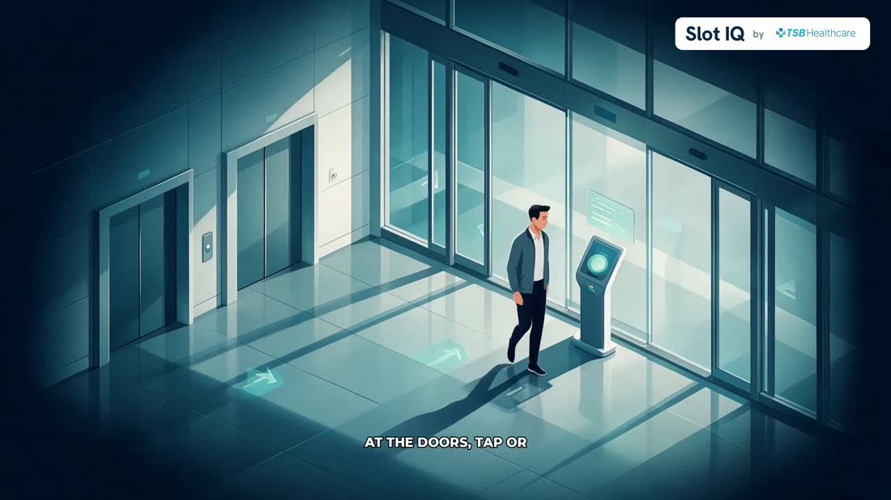

Tap the glowing button under the phone. It plays the next step.

1:44Follow one patient from the doctor’s requisition to the exit: booking, several appointments combined into one plan, a tap or scan at each door, and a tap out at the end. Then see what the same visit looks like for staff and managers.
Prototype. Fake patients and a fictional hospital. Nothing is sent or saved.